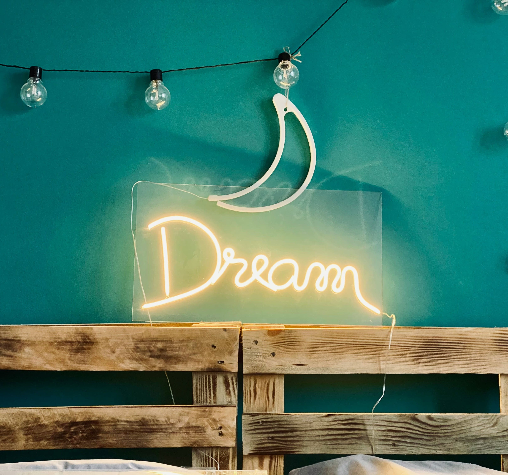

Фритрек и нулевой спринт: Подготовка к работе

<Волнение>
Это было самое начало пути. На этом этапе важно было проникнуться основами и настроиться на учёбу. И, возможно, подумать, как новые знания могут повлиять на ваше будущее.
Сейчас я учусь на 4 курсе в ВУЗе. В самом начале обучения фронтенд-разработке, казалось, что совместить учебу на очном обучении и на курсе будет проще простого. Как бы не так...